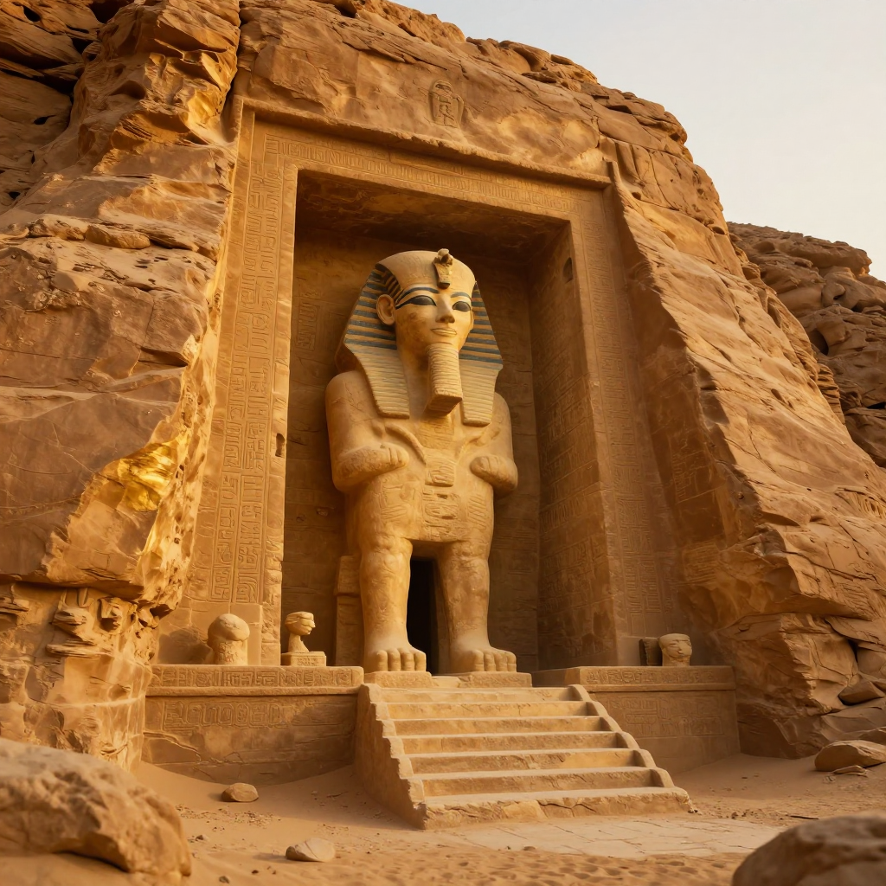
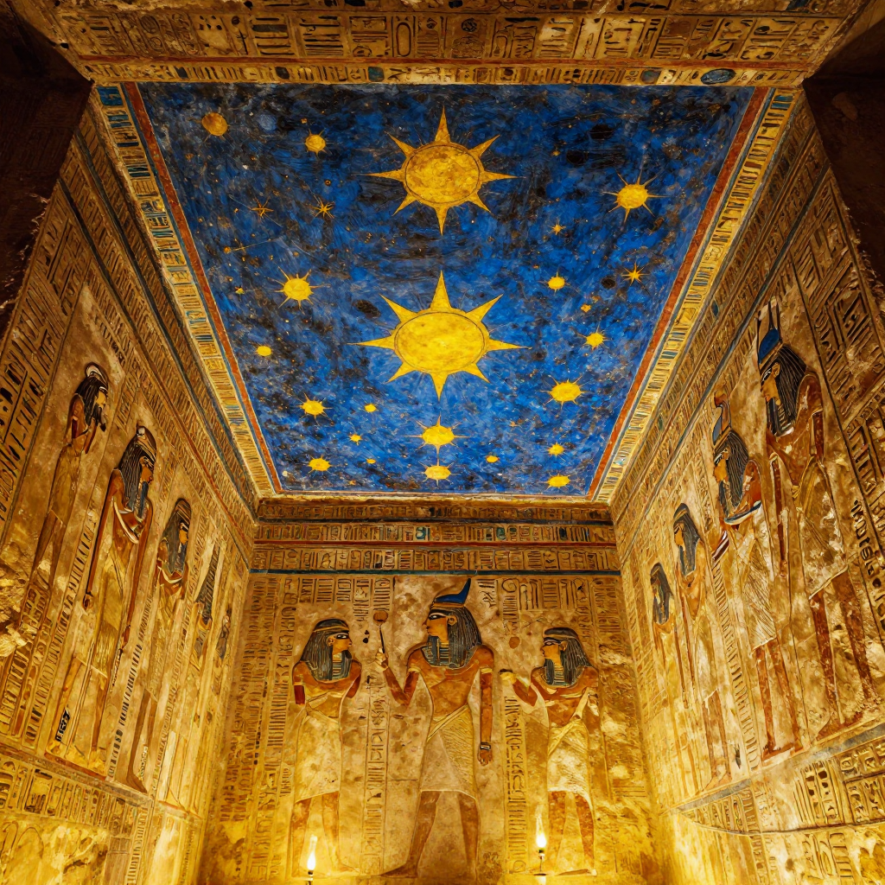
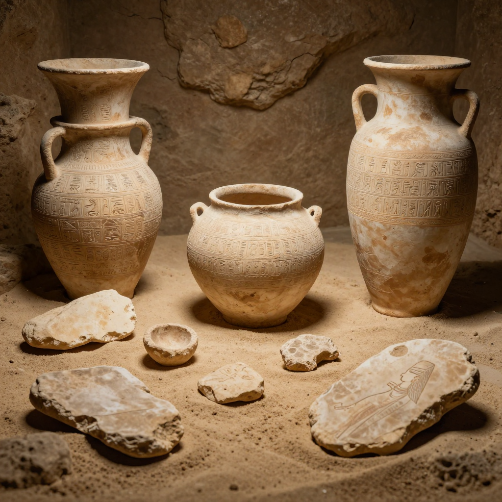

Thutmose II Tomb: The Lost Pharaoh Found!

The entrance to the tomb of Thutmose II, discovered in Luxor, Egypt in 2025.
In February 2025, Egypt announced a discovery that shocked the archaeological world: the tomb of Thutmose II, a pharaoh who ruled around 3,500 years ago. This is the first royal tomb found since Tutankhamun's was discovered in 1922 - over 100 years ago!
Who Was Thutmose II?
Thutmose II was a pharaoh of Egypt's 18th Dynasty, ruling from approximately 1493 to 1479 BCE. He was the husband of the famous Queen Hatshepsut, one of Egypt's most powerful female rulers. Despite his royal status, his tomb had remained hidden for millennia - until now.

The tomb's ceiling still bears ancient decorations after 3,500 years.
🏛️ A Century in the Making
The last royal tomb discovered in Egypt was Tutankhamun's in 1922. That's over 100 years between major royal tomb discoveries!
How Was It Found?
A joint Egyptian-British archaeological team discovered the tomb in the Theban Mountains near Luxor. The tomb had been damaged by flooding in ancient times, which may explain why it was overlooked by tomb robbers and archaeologists alike.
🌊 Flood Damage
Ancient floods filled the tomb with debris, which actually helped preserve some artifacts while making the tomb harder to find!

Archaeologists carefully excavating artifacts from the ancient tomb.
What Did They Find?
Inside the tomb, archaeologists found fragments of alabaster jars inscribed with Thutmose II's name, along with pieces of funerary furniture and pottery. The tomb's architecture and decorations match the style of other 18th Dynasty royal tombs.
🏺 Inscribed Jars
Alabaster jars found in the tomb bear the name of Thutmose II and his wife Hatshepsut, confirming the tomb's owner!
Why Is This Important?
This discovery helps fill gaps in our understanding of Egypt's 18th Dynasty, one of the most powerful periods in ancient Egyptian history. It also shows that even after centuries of exploration, Egypt still has secrets to reveal.
The tomb of Thutmose II proves that there are still major archaeological discoveries waiting to be found!
Clear Summary for Readers of All Ages
Thutmose II Tomb: The Lost Pharaoh Found! can sound dramatic, but the best way to understand it is to separate strong evidence from speculation. This article is written to be clear enough for younger readers while still useful for adults who want reliable context.
In simple terms, this topic matters because it connects three ideas: what happened, how we know, and what remains uncertain. The core story in Thutmose II Tomb: The Lost Pharaoh Found! is easier to follow when we use a timeline, define key terms, and point directly to sources.
In February 2025, Egypt announced a discovery that shocked the archaeological world: the tomb of Thutmose II , a pharaoh who ruled around 3,500 years ago. This is the first royal tomb found since Tutankhamun's was discovered in 1922 - over 100 years ago!
Background Timeline (What Happened, Step by Step)
- In February 2025, Egypt announced a discovery that shocked the archaeological world: the tomb of Thutmose II , a pharaoh who ruled around 3,500 years ago.
- This is the first royal tomb found since Tutankhamun's was discovered in 1922 - over 100 years ago!
- Thutmose II was a pharaoh of Egypt's 18th Dynasty, ruling from approximately 1493 to 1479 BCE.
- The last royal tomb discovered in Egypt was Tutankhamun's in 1922.
- Experts continue revisiting Thutmose II Tomb: The Lost Pharaoh Found! as better tools and stronger source checks become available.
This timeline view helps younger readers build a mental map, and it helps adult readers evaluate whether later claims fit the documented sequence of events.
What We Know with Strong Support
Across discussions of Thutmose II Tomb: The Lost Pharaoh Found!, several points are consistently supported by records or repeatable analysis:
- In February 2025, Egypt announced a discovery that shocked the archaeological world: the tomb of Thutmose II , a pharaoh who ruled around 3,500 years ago.
- This is the first royal tomb found since Tutankhamun's was discovered in 1922 - over 100 years ago!
- Thutmose II was a pharaoh of Egypt's 18th Dynasty, ruling from approximately 1493 to 1479 BCE.
- He was the husband of the famous Queen Hatshepsut, one of Egypt's most powerful female rulers.
These claims are stronger because they can be checked independently, rather than depending on one dramatic story or one unverified source.
How Researchers Study This Topic
Good history is a method, not just a story. When experts examine Thutmose II Tomb: The Lost Pharaoh Found!, they usually combine source criticism, technical analysis, and contextual comparison.
- Archaeologists compare excavation reports, layer dates, and artifact context rather than relying on isolated objects.
- Museum catalogs and conservation notes help separate original features from later restoration changes.
- Scholars test competing interpretations against material evidence, inscriptions, and parallel finds from nearby sites.
For readers aged 7+, a simple rule is helpful: if someone makes a big claim, ask, “What is the evidence, and can another expert check it?”
What Experts Still Debate
Even with good evidence, not every question has a final answer. In Thutmose II Tomb: The Lost Pharaoh Found!, debates often continue because the surviving data is incomplete, damaged, or interpreted in different ways.
One common source of confusion is mixing the topics of Who Was Thutmose II?, How Was It Found?, and What Did They Find? as if they prove the same thing. In reality, each part of the story may require different standards of proof.
A balanced approach is to keep uncertainty visible: we can confidently state what records show today, while leaving room for future evidence to update the picture.
Myths vs. Evidence
Myth: If a topic is mysterious, experts have no idea what happened.
Evidence-based view: Usually, experts know many parts of the story; the debate is about specific details.
Myth: The most dramatic explanation is probably true.
Evidence-based view: The best explanation is the one that matches the most verifiable facts with the fewest assumptions.
Myth: New claims automatically replace old research.
Evidence-based view: New claims become accepted only after careful checks, replication, and critical review.
Why This Story Still Matters Today
Thutmose II Tomb: The Lost Pharaoh Found! is not only a curiosity from the past. It is also a practical lesson in how people evaluate information. In a world full of fast headlines, this topic reminds us to slow down, check sources, and separate confidence from certainty.
For younger readers, this builds critical-thinking skills. For adult readers, it improves media literacy and historical judgment. In both cases, the goal is the same: understand the past clearly enough to make better decisions in the present.
Mini Glossary (Plain Language)
- Primary source: A record made close to the event, like a report, letter, inscription, or official document.
- Secondary source: A later explanation that interprets primary evidence.
- Hypothesis: A proposed explanation that must be tested against evidence.
- Consensus: The view most experts currently support, knowing it can change with new data.
- Context layer: The archaeological layer where an object is found, which helps date and interpret it.
- Provenance: The known history of where an artifact came from and who handled it over time.
Quick Recap
If you remember only three things about Thutmose II Tomb: The Lost Pharaoh Found!, keep these: (1) there is real evidence worth studying, (2) some questions remain open, and (3) careful source-checking is the best path to reliable understanding.
That combination of curiosity and caution is what turns a mystery into a meaningful history lesson for readers of every age.
Extended Context for Deeper Reading
When we revisit Thutmose II Tomb: The Lost Pharaoh Found! with patience, we usually find that the most useful progress comes from careful comparison: compare early reports with later analysis, compare confident claims with documented limits, and compare popular retellings with primary evidence. This method is not flashy, but it is reliable. It helps readers of every age build accurate understanding without losing curiosity.
When we revisit Thutmose II Tomb: The Lost Pharaoh Found! with patience, we usually find that the most useful progress comes from careful comparison: compare early reports with later analysis, compare confident claims with documented limits, and compare popular retellings with primary evidence. This method is not flashy, but it is reliable. It helps readers of every age build accurate understanding without losing curiosity.
Family-Friendly Explanation
If you are reading about Thutmose II Tomb: The Lost Pharaoh Found! with a younger learner, one helpful method is to ask three simple questions: What happened? How do we know? What is still uncertain? These questions keep the discussion clear, honest, and easy to follow without removing the excitement of discovery.
For adult readers, the same framework supports better judgment. It prevents overconfidence, encourages source checking, and makes it easier to separate evidence from storytelling style. That balance is one of the most useful habits history can teach.
Another reason this topic remains valuable is that it shows how knowledge improves over time. Early reports on Thutmose II Tomb: The Lost Pharaoh Found! often reflect limited tools and local assumptions. Later researchers can test those claims with stronger methods, broader comparison sets, and more transparent standards. The result is not always a single final answer, but usually a more accurate map of what is known and what remains open.
References & Further Reading
Editorial note: We cross-check claims across multiple independent sources. See our Editorial Policy.